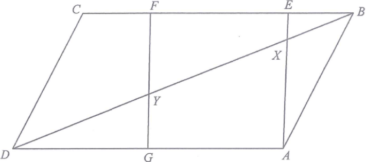

幾何 · 相似三角形與面積

設 $BE=2k$、$EF=7k$、$FC=3k$。正方形邊長 $=EF=7k$，所以 $AE=7k$。
$$BC=BE+EF+FC=12k\quad\Longrightarrow\quad AD=12k$$
$$EX:AX=BE:AD=2k:12k=1:6$$
配合 $AE=7k$ 得 $EX=k$、$AX=6k$。
$\triangle ABX$ 與 $\triangle BEX$ 同高（由 $B$ 到 $AE$ 的距離），底分別是 $AX=6k$、$EX=k$：
$$\frac{[BEX]}{[ABX]}=\frac{1}{6}\quad\Longrightarrow\quad [BEX]=24\times\frac{1}{6}=4\text{ cm}^{2}$$
$BF=BE+EF=9k$，$AD=12k$，由 $\triangle BEX\sim\triangle BFY$ 得
$$EX:FY=BE:BF=2k:9k=2:9$$
$$\frac{4}{[BFY]}=\left(\frac{2}{9}\right)^{2}=\frac{4}{81}\quad\Longrightarrow\quad [BFY]=81\text{ cm}^{2}$$
由 $[ABX]=6k^{2}=24$ 得 $k=2$，平行四邊形面積 $=AD\times AE=12k\times7k=84k^{2}=336$。
對角線 $BD$ 把平行四邊形平分：$[BCD]=168$。
$$[CDYF]=[BCD]-[BFY]=168-81=87\text{ cm}^{2}$$